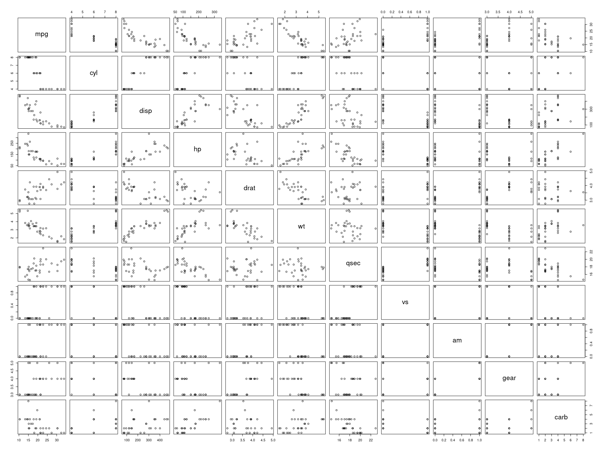

Rmd with a lot of features
Audrey
2022-12-14
1 Context
1.1 In YML
In html_document options, there are :
- toc : there is a table of contents
- toc_float : toc is floating
- number_sections : section are numbered
- code folding : use
class.source = "fold-hide"to hide code chunk, orclass.source = "fold-show"to show - code download : top right button to download the Rmd
1.2 In Rmd
There are hooks in Rmd :
fold_outputcan be set toTRUEorFALSE. IfTRUE, there is ashowbutton to show / hide a chunk outputfold_plotcan be set toTRUEorFALSE. IfTRUE, there is ashowbutton to show / hide a chunk plottime_itcan be set toTRUEorFALSE. IfTRUE, there is a little text after a chunk to know how many seconds it took to run
2 Examples
2.1 time_it
Sys.sleep(3)(Time to run : 3.01 s)
2.2 fold_output
data("mtcars")
head(mtcars)show
mpg cyl disp hp drat wt qsec vs am gear carb
Mazda RX4 21.0 6 160 110 3.90 2.620 16.46 0 1 4 4
Mazda RX4 Wag 21.0 6 160 110 3.90 2.875 17.02 0 1 4 4
Datsun 710 22.8 4 108 93 3.85 2.320 18.61 1 1 4 1
Hornet 4 Drive 21.4 6 258 110 3.08 3.215 19.44 1 0 3 1
Hornet Sportabout 18.7 8 360 175 3.15 3.440 17.02 0 0 3 2
Valiant 18.1 6 225 105 2.76 3.460 20.22 1 0 3 12.3 fold_plot
plot(mtcars)show

2.4 fold chunk
toto = "Hello world"
print(toto)[1] "Hello world"LS0tCnRpdGxlOiAiUm1kIHdpdGggYSBsb3Qgb2YgZmVhdHVyZXMiCmF1dGhvcjogIkF1ZHJleSIKZGF0ZTogImByIGZvcm1hdChTeXMudGltZSgpLCAnJVktJW0tJWQnKWAiCm91dHB1dDoKICBodG1sX2RvY3VtZW50OgogICAgc2VsZl9jb250YWluZWQ6IGZhbHNlCiAgICBsaWJfZGlyOiBsaWJzCiAgICBrZWVwX21kOiB0cnVlCiAgICBjb2RlX2ZvbGRpbmc6IHNob3cKICAgIGNvZGVfZG93bmxvYWQ6IHRydWUKICAgIHRvYzogdHJ1ZQogICAgdG9jX2Zsb2F0OiB0cnVlCiAgICBudW1iZXJfc2VjdGlvbnM6IHRydWUKLS0tCgpgYGB7ciwgc2V0dXAsIGluY2x1ZGUgPSBGQUxTRX0KIyBodHRwczovL2dpdGh1Yi5jb20vcnN0dWRpby9ybWFya2Rvd24vaXNzdWVzLzE0NTMKIyBmb2xkX3Bsb3QgYW5kIGZvbGRfb3V0cHV0IGxvZ2ljYWwgb3B0aW9uCmhvb2tzID0ga25pdHI6OmtuaXRfaG9va3MkZ2V0KCkKaG9va19mb2xkYWJsZSA9IGZ1bmN0aW9uKHR5cGUpIHsKICBmb3JjZSh0eXBlKQogIGZ1bmN0aW9uKHgsIG9wdGlvbnMpIHsKICAgIHJlcyA9IGhvb2tzW1t0eXBlXV0oeCwgb3B0aW9ucykKICAgIGlmIChpc0ZBTFNFKG9wdGlvbnNbW3Bhc3RlMCgiZm9sZF8iLCB0eXBlKV1dKSkgcmV0dXJuKHJlcykKICAgIHBhc3RlMCgKICAgICAgIjxkZXRhaWxzPjxzdW1tYXJ5PiIsICJzaG93IiwgIjwvc3VtbWFyeT5cblxuIiwKICAgICAgcmVzLAogICAgICAiXG5cbjwvZGV0YWlscz4iCiAgICApCiAgfQp9CmtuaXRyOjprbml0X2hvb2tzJHNldCgKICBvdXRwdXQgPSBob29rX2ZvbGRhYmxlKCJvdXRwdXQiKSwKICBwbG90ID0gaG9va19mb2xkYWJsZSgicGxvdCIpLAogIHRpbWVfaXQgPSBsb2NhbCh7CiAgICBub3cgPSBOVUxMCiAgICBmdW5jdGlvbihiZWZvcmUsIG9wdGlvbnMpIHsKICAgICAgaWYgKG9wdGlvbnMkdGltZV9pdCkgewogICAgICAgIGlmIChiZWZvcmUpIHsKICAgICAgICAgIG5vdyA8PC0gU3lzLnRpbWUoKQogICAgICAgIH0gZWxzZSB7CiAgICAgICAgICByZXMgPSBkaWZmdGltZShTeXMudGltZSgpLCBub3csIHVuaXRzID0gInNlY3MiKQogICAgICAgICAgcGFzdGUoIihUaW1lIHRvIHJ1biA6Iiwgcm91bmQocmVzLCBkaWdpdHMgPSAyKSwgInMpIikKICAgICAgICB9CiAgICAgIH0KICAgIH0KICB9KQopCgpvd25fbmFtZSA9IGtuaXRyOjpjdXJyZW50X2lucHV0KCkgIyBteUZpbGVOYW1lLlJtZApvd25fbmFtZSA9IHN1YnN0cihvd25fbmFtZSwgc3RhcnQgPSAxLCBzdG9wID0gbmNoYXIob3duX25hbWUpIC0gNCkKZmlsZV9kaXIgPSBwYXN0ZTAoImZpbGVzLyIsIG93bl9uYW1lLCAiXyIsCiAgICAgICAgICAgICAgICAgIHJhd1RvQ2hhcihhcy5yYXcoc2FtcGxlKGMoNDg6NTcsNjU6OTAsOTc6MTIyKSwgMTAsIHJlcGxhY2UgPSBUUlVFKSkpLCAiLyIpCgpzZXQuc2VlZCgxMzM3TCkKa25pdHI6Om9wdHNfY2h1bmskc2V0KGVjaG8gPSBUUlVFLAogICAgICAgICAgICAgICAgICAgICAgY29tbWVudCA9IE5BLAogICAgICAgICAgICAgICAgICAgICAgZmlnLnBhdGggPSBmaWxlX2RpciwKICAgICAgICAgICAgICAgICAgICAgIAogICAgICAgICAgICAgICAgICAgICAgIyBkaXNwbGF5IGNodW5rIG91dHB1dAogICAgICAgICAgICAgICAgICAgICAgbWVzc2FnZSA9IEZBTFNFLAogICAgICAgICAgICAgICAgICAgICAgd2FybmluZyA9IEZBTFNFLAogICAgICAgICAgICAgICAgICAgICAgZm9sZF9vdXRwdXQgPSBGQUxTRSwgIyB1c2VmdWxsIGZvciBzZXNzaW9uSW5mbygpCiAgICAgICAgICAgICAgICAgICAgICBmb2xkX3Bsb3QgPSBGQUxTRSwKICAgICAgICAgICAgICAgICAgICAgIAogICAgICAgICAgICAgICAgICAgICAgIyBmaWd1cmUgc2V0dGluZ3MKICAgICAgICAgICAgICAgICAgICAgIGZpZy5hbGlnbiA9ICdjZW50ZXInLAogICAgICAgICAgICAgICAgICAgICAgZmlnLndpZHRoID0gMjAsCiAgICAgICAgICAgICAgICAgICAgICBmaWcuaGVpZ2h0ID0gMTUsCiAgICAgICAgICAgICAgICAgICAgICAKICAgICAgICAgICAgICAgICAgICAgICMgc29tZXRoaW5nIGFib3V0IHNlZWQsIGNodW5rIGFuZCBSbWFya2Rvd24gY29tcGlsYXRpb24KICAgICAgICAgICAgICAgICAgICAgICMgaHR0cHM6Ly9zdGFja292ZXJmbG93LmNvbS9xdWVzdGlvbnMvMzk0MTcwMDMvbG9uZy12ZWN0b3JzLW5vdC1zdXBwb3J0ZWQteWV0LWVycm9yLWluLXJtZC1idXQtbm90LWluLXItc2NyaXB0CiAgICAgICAgICAgICAgICAgICAgICAjIGNhY2hlID0gVFJVRSwKICAgICAgICAgICAgICAgICAgICAgIGNhY2hlLmxhenkgPSBGQUxTRSwgCiAgICAgICAgICAgICAgICAgICAgICAKICAgICAgICAgICAgICAgICAgICAgICMgYWRkIHJ1bnRpbWUgYWZ0ZXIgY2h1bmsKICAgICAgICAgICAgICAgICAgICAgIHRpbWVfaXQgPSBGQUxTRSkKYGBgCgojIENvbnRleHQKCiMjIEluIFlNTAoKSW4gYGh0bWxfZG9jdW1lbnRgIG9wdGlvbnMsIHRoZXJlIGFyZSA6CgotIHRvYyA6IHRoZXJlIGlzIGEgdGFibGUgb2YgY29udGVudHMKLSB0b2NfZmxvYXQgOiB0b2MgaXMgZmxvYXRpbmcKLSBudW1iZXJfc2VjdGlvbnMgOiBzZWN0aW9uIGFyZSBudW1iZXJlZAotIGNvZGUgZm9sZGluZyA6IHVzZSBgY2xhc3Muc291cmNlID0gImZvbGQtaGlkZSJgIHRvIGhpZGUgY29kZSBjaHVuaywgb3IgYGNsYXNzLnNvdXJjZSA9ICJmb2xkLXNob3ciYCB0byBzaG93Ci0gY29kZSBkb3dubG9hZCA6IHRvcCByaWdodCBidXR0b24gdG8gZG93bmxvYWQgdGhlIFJtZAoKIyMgSW4gUm1kCgpUaGVyZSBhcmUgaG9va3MgaW4gUm1kIDoKCi0gYGZvbGRfb3V0cHV0YCBjYW4gYmUgc2V0IHRvIGBUUlVFYCBvciBgRkFMU0VgLiBJZiBgVFJVRWAsIHRoZXJlIGlzIGEgYHNob3dgIGJ1dHRvbiB0byBzaG93IC8gaGlkZSBhIGNodW5rIG91dHB1dAotIGBmb2xkX3Bsb3RgIGNhbiBiZSBzZXQgdG8gYFRSVUVgIG9yIGBGQUxTRWAuIElmIGBUUlVFYCwgdGhlcmUgaXMgYSBgc2hvd2AgYnV0dG9uIHRvIHNob3cgLyBoaWRlIGEgY2h1bmsgcGxvdAotIGB0aW1lX2l0YCBjYW4gYmUgc2V0IHRvIGBUUlVFYCBvciBgRkFMU0VgLiBJZiBgVFJVRWAsIHRoZXJlIGlzIGEgbGl0dGxlIHRleHQgYWZ0ZXIgYSBjaHVuayB0byBrbm93IGhvdyBtYW55IHNlY29uZHMgaXQgdG9vayB0byBydW4KCiMgRXhhbXBsZXMKCiMjIHRpbWVfaXQKCmBgYHtyLCB0aW1lX2l0ID0gVFJVRX0KU3lzLnNsZWVwKDMpCmBgYAoKIyMgZm9sZF9vdXRwdXQKCmBgYHtyLCBmb2xkX291dHB1dCA9IFRSVUV9CmRhdGEoIm10Y2FycyIpCmhlYWQobXRjYXJzKQpgYGAKCiMjIGZvbGRfcGxvdAoKYGBge3IsIGZvbGRfcGxvdCA9IFRSVUV9CnBsb3QobXRjYXJzKQpgYGAKCiMjIGZvbGQgY2h1bmsKCmBgYHtyLCBjbGFzcy5zb3VyY2UgPSAiZm9sZC1oaWRlIn0KdG90byA9ICJIZWxsbyB3b3JsZCIKcHJpbnQodG90bykKYGBgCgoKCgo=